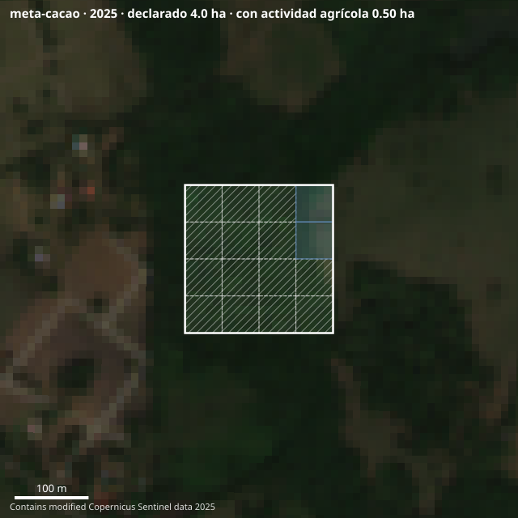
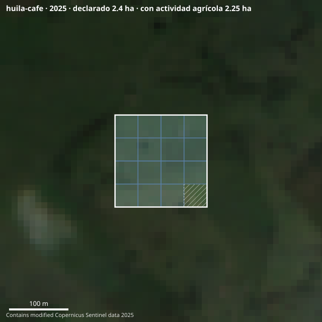

Un campesino sin extractos bancarios sí tiene historia financiera. Está escrita en su lote, y lleva nueve años escribiéndose.
Abrir la aplicaciónPredio meta-cacao
Vereda La Esmeralda
Granada, Meta · Cacao CCN-51
[ 02 ] El cuello de botella no es el que todos creen
De los que solicitan crédito agropecuario, se aprueba el 89,3%. El problema está antes: el 88,4% de las Unidades de Producción Agropecuaria nunca solicita. El requisito que las frena está escrito en la hoja del Banco Agrario: un balance con fecha no mayor a 90 días. Sin contabilidad formal, no existe.
Los pequeños productores son el 79,3% de las operaciones de FINAGRO y apenas el 12,8% del dinero. El capital está, la garantía estatal está: falta una forma barata de evaluar a quien no tiene papeles.

No decidimos sobre lo que suponemos
decidimos sobre lo que se puede volver a medir

[ 04 ] El modelo
Apollo en Kenia y Agrolend en Brasil prestan de su propio balance: levantan deuda, cargan con el riesgo y compiten contra tasas subsidiadas que no pueden igualar. SEEDLLITE se para un piso más arriba. El dinero ya existe —FINAGRO colocó $48,1 billones en 2025— y el Estado ya garantiza hasta el 80 % del crédito al pequeño productor. Lo que no existe es una forma barata de saber a quién prestarle. Eso es lo que vendemos.
El banco conserva la relación, el desembolso y el margen financiero. Nosotros entregamos el dictamen firmable que hoy le cuesta una visita de campo. Somos software, no actividad financiera: sin riesgo de crédito, sin balance que levantar, sin licencia que pedir.
El insumo es una imagen pública y gratuita: el costo marginal del dictamen número un millón es prácticamente el mismo que el del primero. El techo no lo pone el capital, lo pone la fuerza de ventas — y cada cliente nuevo hereda un motor que ya está construido.
Cada crédito colocado devuelve el desenlace: pagó, se atrasó, se perdió la cosecha. Esa realimentación calibra los umbrales contra resultados reales, no contra supuestos. El foso no es el satélite —es de todos— es la serie de desenlaces que solo tiene quien lleva años emitiendo.
«No le pedimos que confíe en el campesino. Le pedimos que confíe en nueve años de evidencia satelital de que ese campesino sí siembra.»